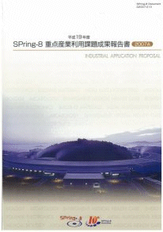
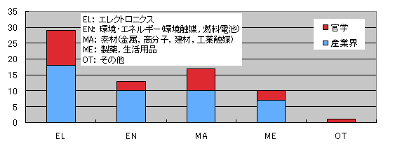
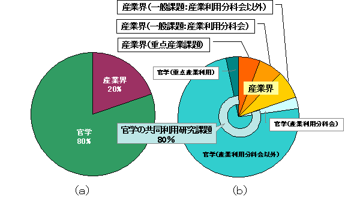
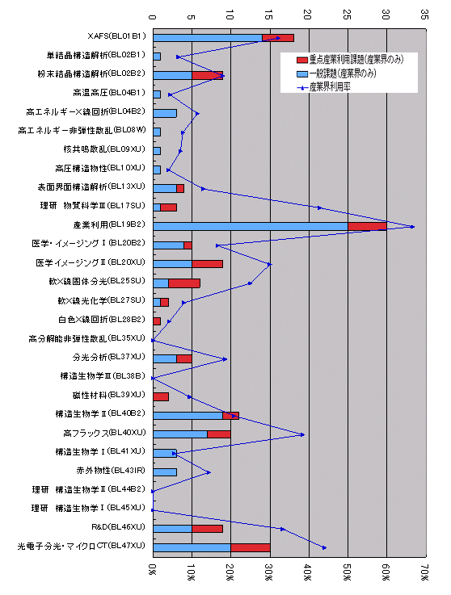
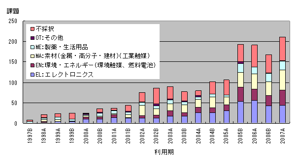

1. 概要2. 公募の内容
3. 成果公開の考え方
4. 実施の経緯と流れ
5. 結果
6. 施策の波及効果
7. 課題報告書
* 送付を希望される方は、連絡先（氏名、所属、〒住所、E-mail）をご記入の上、 事務局 support@spring8.or.jp までE-mailでご連絡ください。
SPring-8を含む先端大型研究施設における産業利用の更なる促進を目的に、
平成17年度(2005B期)より文部科学省のプログラムとして先端大型研究施設戦略活用プログラムが実施されて支援体制の整備が進み、
利用実績も増加すると共に産業利用推進室の活動も軌道に乗っている。
今後、継続的に産業界での活用を推進し、一層の成果を生み出すため、平成19年度（2007A期）以降、
SPring-8における重点研究課題 として産業利用領域を指定した。
これは、ここで中断することなく継続的に支援活動を推進する趣旨である。
また、我が国の科学技術政策の柱となる第3期科学技術基本計画の「社会・国民に支持され、
成果を還元する科学技術」の中で、科学技術の成果をイノベーションを通じて社会に還元する努力を強化することが謳われている。
SPring-8では、大学、国立試験研究機関、独立行政法人などの公的部門と民間企業という枠を越えた産官学連携の推進と、
それに基づいた産業利用の推進と成果の社会への還元が期待されている。
そこで、産業界にとって有効な利用手法の開発が産官学連携により積極的に展開されるとの観点から、
「重点産業利用課題」では民間企業のみならず、大学等の公的部門からの応募も受け入れるものとする。
本プログラムで募集する課題は「新規利用者」、「新領域」、「産業基盤共通」と「先端技術開発」の4つに分類している。
「新規利用者」とは、申請代表者が、これまで、一般課題への応募などを含め、
SPring-8を利用したことのない利用者を指している。但し、事業規模が相当程度大きく事業範囲が多岐に及ぶ企業で、
これらの企業が既に利用している場合には、既に利用している事業分野とは異なる新規分野からの新たなユーザーであれば、
「新規利用者」として認めている。
「新領域」とは、申請者の利用経験に関係なく、これまでSPring-8で実施されたことがない産業領域、
あるいは、近年開発された新手法を用いることによって新たな展開が可能になる産業領域を指している。
新領域の例を下記に示しているが、これ以外でも新規性が認められる研究領域であれば、新領域の対象になる。
○コンクリート等建築資材⇒三次元内部構造をＸ線CTによる撮影
○ヘルスケア⇒毛髪や皮膚の構造をＸ線回折・散乱及び透視画像で解析
○医薬品原薬⇒粉末Ｘ線回折による構造解析
○高エネルギー光電子分光法⇒薄膜材料の内部界面の状態解析
○環境負荷物質微量分析⇒大気・水などの重金属汚染物質の化学状態
○耐腐食構造材⇒金属材料の表層やサビの構造・状態分析
○高密度記録装置⇒DVD，HDD等の新規記録材料の薄膜構造・状態分析
1 重点研究課題は、国の科学技術・学術審議会研究計画・
評価分科会研究評価部会SPring-8ワーキンググループが平成13年9月から約1年かけて実施した
「大型放射光施設（SPring-8）に関する中間評価」においてまとめた現状評価と提言を受けて、
（財）高輝度光科学研究センター（JASRI）がSPring-8におけるより一層の成果創出を目指して
利用研究への戦略的な観点の導入を図るものである。
「産業基盤共通」とは、それぞれの産業分野に共通する課題を解決する目的、
あるいは産業利用に有効な手法の共同開発を目的として、複数の企業を含むグループが一体となって取り組むもので、
新計測技術の確立、共通課題のデータベース化等を図る研究を指している。
申請代表者が複数の企業を含むグループを取りまとめて、一つの課題として申請して頂く。
ここで言う「複数の企業」とは、それぞれ参加する企業が同等かつ独立に成果を利用できる関係にあることを想定している。
したがって、産学官連携の研究グループによる利用の場合には、学と官は「複数の企業」としてカウントされない。
「先端技術開発」とは、ユーザーが実施するイノベーション型の技術開発課題で、成果の企業業績への貢献、
あるいは社会還元を目指した研究を指している。
SPring-8を利用して得られた解析結果及び成果は、以下の利用報告書に取りまとめて提出してもらう。
- 利用報告書Experiment Report（英文または和文）
利用終了日から60日以内にオンライン提出。 - 重点産業利用課題報告書（和文）
課題採択後に利用業務部より送付される文書に記載されている締切日までに提出。 なお、提出方法は「電子データ(原則としてMSワード)」を電子メールまたは郵送で所定の宛先に提出。
上記の2007Aの報告書のうち「利用報告書Experiment Report」は平成19年10月1日Web公開。 「重点産業利用課題報告書」は印刷公表とする。ただし、提出した上記2つの報告書に関して、 利用者が特許取得などの理由により公開の延期を希望し、所定の手続きにより認められた場合には、 上記2つの報告書共に、公開を最大2年間延期することができる(2つの報告書自体は、締切日までに必ず提出してもらう)。 公開延期期間満了時には、公開延期理由の結果・成果の報告をしてもらう。
- 重点領域の指定
「重点産業利用課題」が領域指定型の重点研究課題として、平成19年1月26日に重点領域推進委員会で指定を受けた。 これにより、重点産業利用課題は、領域指定型の重点研究課題（公募）として扱われる。 - 課題選定
課題の選考は、学識経験者、産業界等の有識者から構成される 「利用研究課題審査委員会」（以下「課題審査委員会」という。）により実施される。 課題審査委員会は、「重点産業利用領域」として領域指定された趣旨に照らして優秀と認められる課題を選定する。
審査は非公開で行われるが、申請課題との利害関係者は当該課題の審査から排除される。 また、検討会および選定委員会の委員は、委員として取得した一切の情報を、 委員の職にある期間だけでなくその職を退いた後も第三者に漏洩しないこと、 情報を善良な管理者の注意義務をもって管理すること等の秘密保持を遵守することが義務付けられている。 - 審査の手順
審査は以下の手順により実施される。- 形式審査
提出された申請書類について、応募の要件を満たしているかについて審査する。 なお、応募の要件を満たしていないものは、以降の審査の対象から除外される場合がある。 - 書類審査
課題審査委員会の下に設置する産業利用分科会により、書類審査を実施する。 - 最終審査
書類審査における評価を踏まえ、課題審査委員会において審査を実施し採択課題を決定する。
- 形式審査
- 審査の観点
審査（形式審査を除く）は、以下の観点に重点を置いて実施される。- 科学技術における先端性を有すること
- 産業利用上の成果創出に資すること
- 課題分類の趣旨に合致すること
- 研究手段としてのSPring-8の必要性
- 実験内容の技術的な実施可能性
- 実験内容の安全性
- 利用者支援
コーディネーター並びに産業利用支援グループが中心となり、課題毎に担当者をおき、 ビームライン担当者の協力の下、全所的に利用者支援を実施した。支援の内容は、重点分野における実験環境の整備、 コーディネーター及びスタッフによる実験企画・準備、実験実施、実験解析に至る技術支援などからなる。 - 利用実験
平成19年6月～平成19年7月に実施された利用実験課題である。 - 報告
2008年2月29日のSPring-8重点産業利用課題成果報告会において、 平成19年度2007Aの重点産業利用課題の成果報告を実施する予定である。 当日のプログラム等については後日SPring-8ホームページ上に掲載予定である。
以下に平成19年度2007Aの重点産業利用課題の結果についてまとめる。
- 応募・採択結果
表1 研究機関別応募・採択結果機関分類 応募数 採択数 採択率(%) 官学 28 26 92.9 産業界 56 45 80.4
- 分類
表2 研究機関別・領域別採択結果領域分類 産業界 官学 産官学合計 産業基盤共通 1 4 5 新規利用者 6 2 8 新領域 11 6 17 先端技術開発 27 14 41
- 利用報告書の公開日延期
2007A利用期で実施した課題について利用報告書公開日延期申請が 提出された課題の内訳は次の通りである。
○公開日延長許可：15課題
理由内訳（複数回答有り）
a.知的財産権の取得のため：12課題
b.事業への適用のため：2課題(2課題共にaと重複、内、1課題はcと重複)
c.その他の理由：6課題(内、3課題はaと重複、また、1課題はa,ｂと重複)
○公開日延長不許可：0課題
下記の表3は、公開日延期許可された課題を分野別に分類した結果を示す。
表3 分野別公開日延期許可課題分野 課題件数 エレクトロニクス 6 環境・エネルギー 3 素材(金属・高分子等) 4 製薬・生活用品 2 合計 15
- 産官学の動向
- 研究機関
昨年まで実施した「先端大型研究施設戦略活用プログラム」では、産業界からの新規利用者を優先させるという、 極めて直接的な産業利用促進施策であった。これに対して、本プログラムでは、 産業界にとって有効な利用手法の開発が産官学連携により積極的に展開されるとの観点から、 民間企業のみならず、大学等の公的部門からの応募も受け入れることにした。その結果、表1に示す通り、 官学から3割を越える応募・採択課題があった。この内訳は、工学系大学からの応募・採択が9割を越えており、 本プログラムの方針に合致した結果となっていることが分かる。 - 産業基盤共通
本プログラムに於いて、はじめて導入した「産業基盤共通」の課題は、5課題が採択され、 そのうちの4課題では申請代表者が官学の研究機関である。 この結果は、これら課題の成果が産業界にどのように生かされるかを見守る必要があるものの、 本プログラムで意図している産官学連携の推進の観点から好ましい結果である。 - 新規利用者
今回初めて応募・採択された新規の課題、即ち新規利用者の課題は8課題であり、 2006A及び2006Bで実施した「先端大型研究施設戦略活用プログラム」と比較して半減している。 これは、前年度実施の先端大型研究施設戦略活用プログラムでは新規利用者を優先的に採用する方針のもと、 二回目までの利用に対して新規利用者として認めていたことから、数え方の違いに因るものであることで容易に理解できる。 したがって、依然として新規課題の応募が多いことを示していると同時に、 未だ利用していない企業が潜在的に多くあると推測され、 新規利用者に対して利用相談をはじめとしたきめ細かい取り組みを継続する必要がある。 - 新領域・先端技術開発
図1は、申請代表者の申告に基づいて分類した分野別採択課題数を示している。 産業界及び官学ともに、予想通りエレクトロニクス分野の課題が多く、 次いで素材(金属、高分子等)分野の課題と続いていることから、この2大分野に於いて、 SPring-8の利用技術が極めて有用であることを示している。
図1 分野別採択課題数
- 研究機関
図2(a)は、2007A期に於ける共同利用研究実施課題のうち、 実験責任者が民間企業の研究者である課題数の割合を示したものである。 図に示す通り、民間企業の課題数は、今期はじめて共同利用研究実施課題全体の20％を越える割合となった。 民間企業の課題数の20％について、応募課題分類別の内訳は、図2(b)に示す通り、 それぞれ重点産業利用課題が6％、一般課題のうち産業利用分科会で採択された課題が7％、 産業利用分科会以外で採択された課題が7％であり、 重点産業利用課題と既存の一般課題とを産業界が上手に使い分けていることが分かる。

図2 2007A共同利用研究実施課題の民間企業の実験責任者の割合
次ぎに、利用技術分野について目を向けると、 図3に示すビームライン別民間企業実施課題数と全体の課題数に対する割合から、 依然としてＸＡＦＳ(BL01B1)、Ｘ線回折・イメージング(BL19B2)、Ｘ線小角散乱(BL40B2)、 高エネルギーＸ線光電子分光(BL47XU)の課題に集中し、結果的に特定のビームラインに課題が集中する傾向は変わらない。 幸いにも、2007B期から産業利用ⅡビームラインとしてＸＡＦＳ専用ビームラインの共用が開始され、 既存のＸＡＦＳビームラインへの課題の集中が緩和されつつある。 さらに、2008A期からはアンジュレーター光源の産業利用Ⅲビームラインの供用開始も予定されており、 高エネルギーＸ線光電子分光の競争率も緩和されるものと見込まれる。 その他にもＸ線小角散乱など課題が集中する利用技術に対しては、 当面スループットの向上を強力に押し進めることはもとより、長期的には設備増設も視野に入れた戦略が必要である。

図3 2007A期ビームライン別民間企業実施課題数と全体の課題数に対する割合
図4は、民間企業の実験責任者が共同利用研究課題に応募した課題 (不採択課題も含む)の分野別課題数を半期毎の推移で示している。 産業界のより一層の利用促進を目的として2005年度に始まり2006B年度末に終了した 先端大型研究施設戦略活用プログラムによって突出した課題数は、 新プログラムの重点産業利用課題が始まる2007A期に於いても応募、 採択ともに依然として増加傾向である。このことは、 依然として申請しても採択されずに実施できない課題も数多くあることを示している。 上記で述べた通り、特定ビームラインへの課題集中による過度な競争は速やかに対策を高じる必要があるものの、 適度な競争はある面、成果創出の源泉として有効であり、やむを得ないものと考える。

図4 民間企業における分野別の共用課題(不採択課題含)
この成果報告書に掲載される課題報告書は、2007A利用期に実施された課題のうち、 利用報告書公開日延期申請許可となったものは除いている。